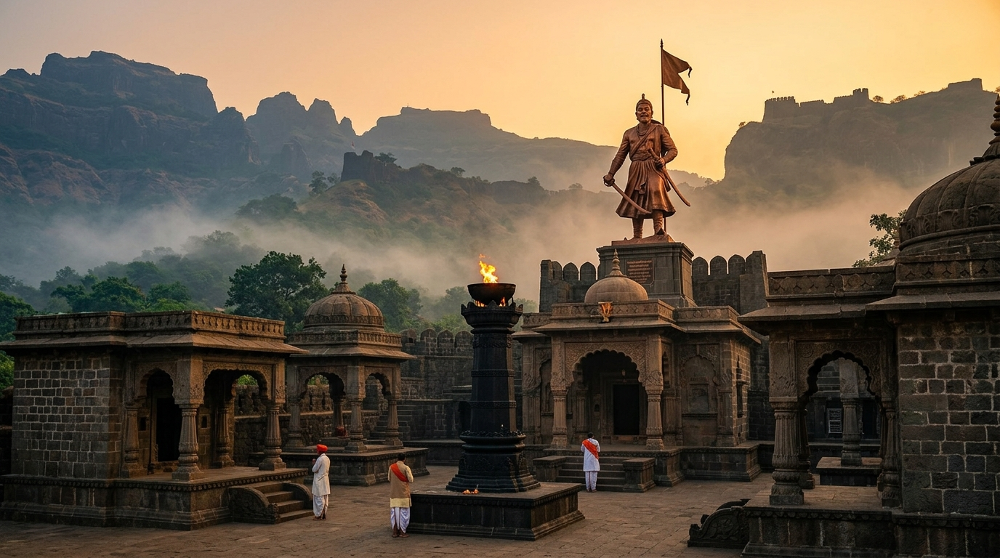

स्वाभिमानाची अखंड मशाल • छत्रपती संभाजी महाराज व स्वराज्य वीरांच्या बलिदानाचे कृतज्ञतापूर्वक स्मरण • अभ्यास, मूल्यसंवर्धन आणि समाजोपयोगी रचनात्मक कार्याची प्रेरणा.
ज्या महामानवांनी स्वराज्य, स्वाभिमान, संस्कृती आणि रयतेच्या स्वातंत्र्यासाठी प्राण, पद, संपत्ती व सुरक्षिततेचा त्याग केला, त्यांच्या त्यागाचे ऋण मनापासून मान्य करणे.
केवळ नावांचा जयघोष करण्यापेक्षा तरुण पिढीने मूळ ऐतिहासिक कागदपत्रे, बखरी, शिलालेख आणि समकालीन संदर्भ वाचून खरा इतिहास समजून घेणे.
छत्रपती शिवराय-शंभूरायांच्या आदर्शांमधून शौर्य, संयम, सचोटी, स्त्रीदाक्षिण्य, स्वाभिमान, कर्तव्याची जाणीव आणि समाजहिताची जीवनमूल्ये अंगीकारणे.
गड-किल्ल्यांचे संवर्धन, ऐतिहासिक समाधी स्थळांची निगा, मोडी लिपीतील पत्रांचे डिजिटायझेशन, संग्रहालये आणि अभ्यास व्याख्यानांचे आयोजन करणे.
केवळ दुःखात न अडकता त्यागाचे रूपांतर सकारात्मक सामाजिक कार्यात करणे — रक्तदान, दुर्ग स्वच्छता, वृक्षारोपण, विद्यार्थी शिष्यवृत्ती व गरजू रुग्णांना मदत.
"स्वाभिमान जपा, पण कोणाचाही द्वेष करू नका. पूर्वजांच्या पराक्रमावर गर्व करा, पण स्वतःचे कर्तव्य पूर्ण करून नव्या पिढीचे भविष्य उज्ज्वल घडवा."
महाराष्ट्रातील प्रत्येक जिल्ह्यात बलिदान मासानिमित्त १०,०००+ रक्त बाटल्या संकलनाचे स्वैच्छिक उद्दिष्ट.
रायगड, सिंहगड, पन्हाळा, राजगड व शिवनेरीवर प्लास्टिक मुक्ती, पाण्याचे टाके स्वच्छता व दिशादर्शक फलक उभारणी.
ग्रामीण भागातील शाळा व वाचनालयांना अस्सल ऐतिहासिक पुस्तके व अभ्यास साहित्याचे मोफत वितरण.
किल्ल्यांच्या पायथ्याशी व पाणलोट क्षेत्रात देशी वृक्षांची (वड, पिंपळ, जांभूळ, आंबा) लागवड व संगोपन.

स्थान: वढू बुद्रुक व तुळापूर (पुणे). भीमा-भामा-इंद्रायणी त्रिवेणी संगम.
ऐतिहासिक संदर्भ: ११ मार्च १६८९ (फाल्गुन अमावास्या). स्वराज्याच्या स्वाभिमानासाठी सर्वोच्च बलिदान.

स्थान: रायगड महाड, जिल्हा रायगड.
ऐतिहासिक संदर्भ: ३ एप्रिल १६८० (हनुमान जयंती). महात्मा जोतीराव फुले यांनी १८६९ मध्ये समाधीचा शोध घेऊन प्रथम शिवजयंती साजरी केली.

स्थान: पावनखिंड (घोडखिंड), विशाळगड परिसर, कोल्हापूर.
ऐतिहासिक संदर्भ: १३ जुलै १६६०. छत्रपती शिवाजी महाराज विशाळगडावर सुखरूप पोहोचेपर्यंत ३०० बांदल वीरांनी सिद्धी मसूदचे सैन्य रोखून धरले.

स्थान: सिंहगड, हवेली, जिल्हा पुणे. मूळ गाव उमरथे (पोलादपूर).
ऐतिहासिक संदर्भ: ४ फेब्रुवारी १६७०. 'आधी लगीन कोंढाण्याचे मग माझ्या रायबाचे'. उदयभानूशी निकराची झुंज देऊन गड स्वराज्यात आणला.

स्थान: पुरंदर किल्ला, सासवड, पुणे.
ऐतिहासिक संदर्भ: १६६५ पुरंदर वेढा. दिलेरखानाच्या प्रचंड सैन्याविरुद्ध मावळ्यांचे अतुलनीय शौर्य. 'मुरारबाजी पडले पण किल्ला लढत राहिला'.

स्थान: संताजी समाधी — कारखेल (ता. माण, सातारा); धनाजी समाधी — वडगाव (कोल्हापूर).
ऐतिहासिक संदर्भ: १६८९ ते १७०७. छत्रपती संभाजी महाराजांच्या बलिदानानंतर औरंगजेबाला दख्खनच्या मातीत गाडणारे अद्वितीय सेनापती.